First Round
Matching Perfect Candidates to Perfect Roles
Overview
First Round is a recruitment app designed to streamline and personalize the process of matching candidates to their ideal roles by focusing on compatibility and ease. It offers an innovative, all-in-one platform where recruiters and candidates can connect with a matchmaking approach similar to a dating app, making it simple to find perfect professional fits based on skills, culture, and career aspirations.
Problem Statement
Finding the right job or the right candidate can be stressful and time-consuming. Job seekers often have trouble finding opportunities that match their skills and goals, while employers struggle to sort through applications to find the best fit. This can lead to delays, missed opportunities, and frustration for both sides.
How did First Round begin?
The Origin Story
One thing I've learned as a college student searching for an internship is that the process can definitely take a toll on you. While sitting in my dorm room applying for my dream roles, I started thinking of ideas for a less time-consuming and stress-free way to apply for open positions.
Project Timeline
October 2024 - Present
Project Details
Divergent to Convergent Thinking
Logo Design: Brainstorming and Refining Design Choices
Rapid Iteration
During one-minute brainstorming sprints, I sketched ideas that aligned closely with the mission of the 'First Round' app. After creating 12 different mock designs, I used convergent thinking to narrow down my options and move forward with a logo design that helps me to further develop my mission statement.
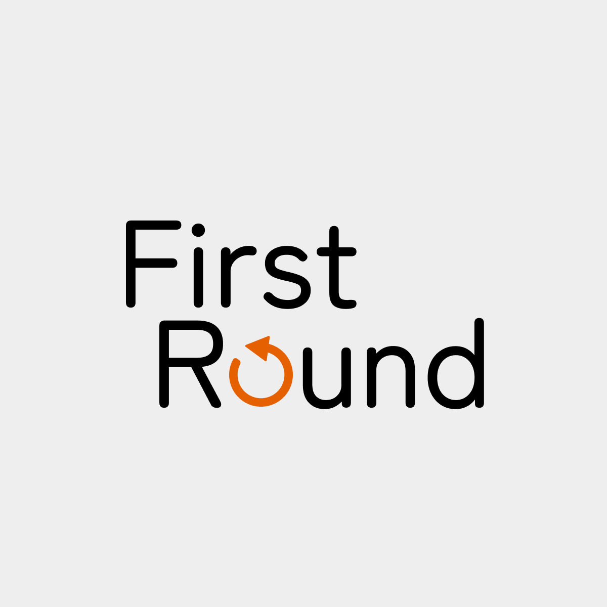
Pros - Minimalistic, two-toned color scheme
Cons - Does not clearly define the app's purpose
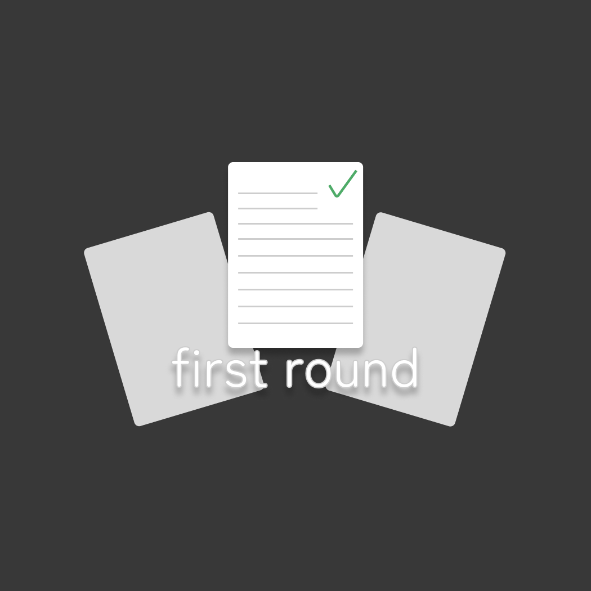
Pros - Clear and defined logo
Cons - Complex, not versatile, bland color
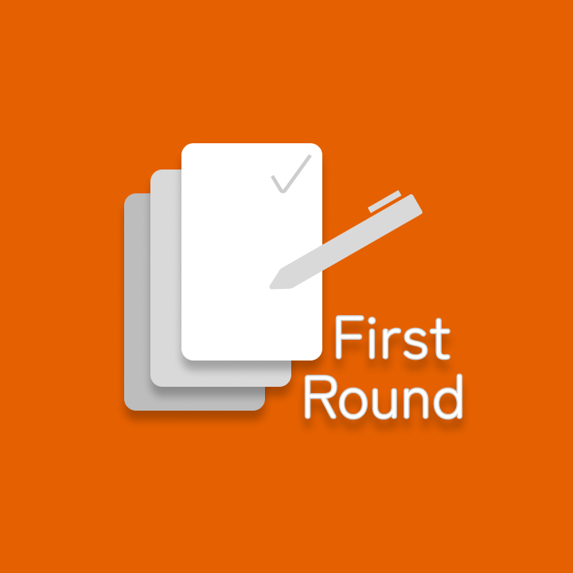
Pros - Detailed and descriptive
Cons - The text isn't the focus of the logo
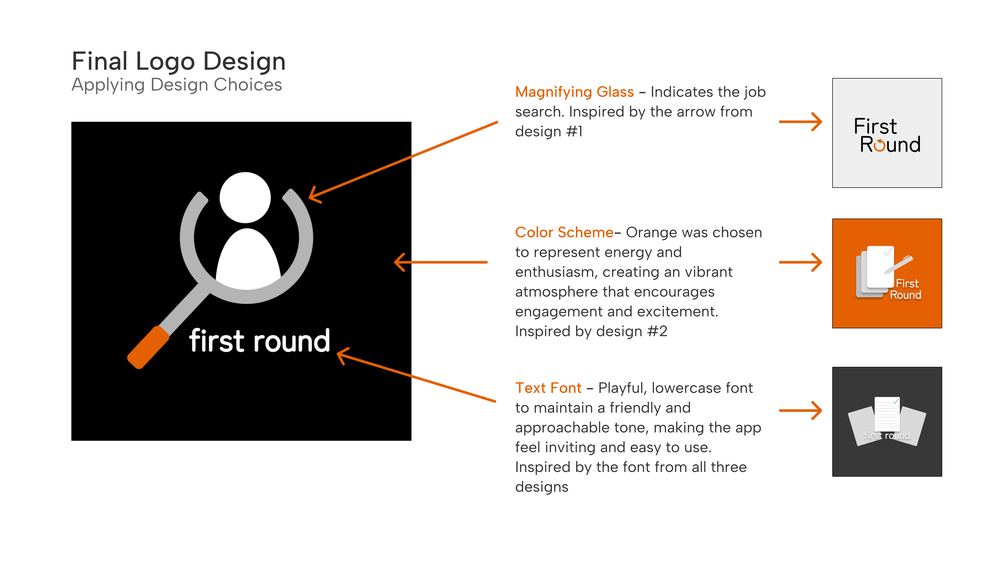
Rapid Ideation: From Wireframes to First-Draft Prototype
Turning information architecture into a tangible product through fast, intentional iteration
This phase focused on rapidly translating information architecture into a tangible mobile experience. I began by defining the core content and functionality for each screen, then created low-fidelity wireframes that mapped these elements within the constraints of a mobile device. From there, I iteratively layered in visual hierarchy, imagery, and early branding, integrating logo exploration and an initial color palette. The result is a first-draft prototype designed to validate structure, flow, and layout rather than final visual polish, serving as a foundation for testing, feedback, and refinement.
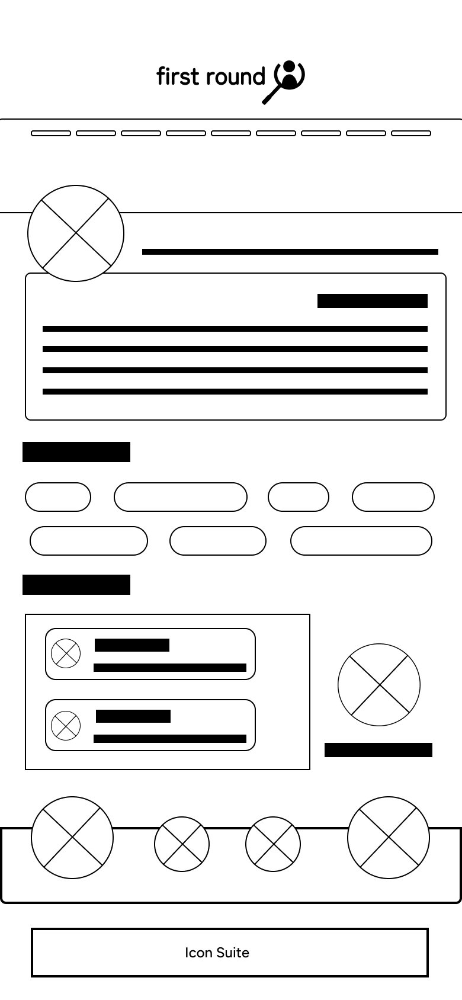
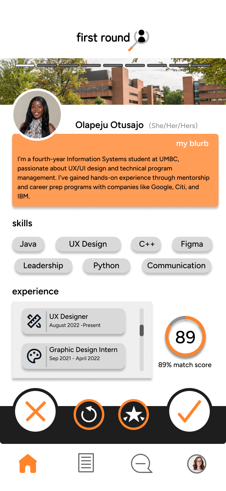
Digital Wire Frame & Prototype
Landing Page: Candidate Overview
Purpose
The landing page is the first page users will see upon entering the app. This prototype shows the look of the app from the recruiters standpoint. Here they can see a candidate that is populated based on preset filters such as; degree type, years of work experience, and their match score to the position that the recruiter is searching for.
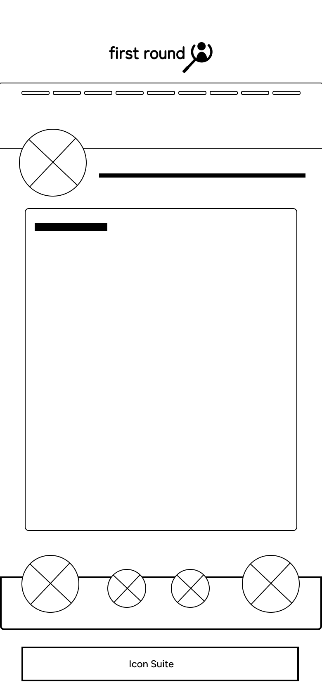
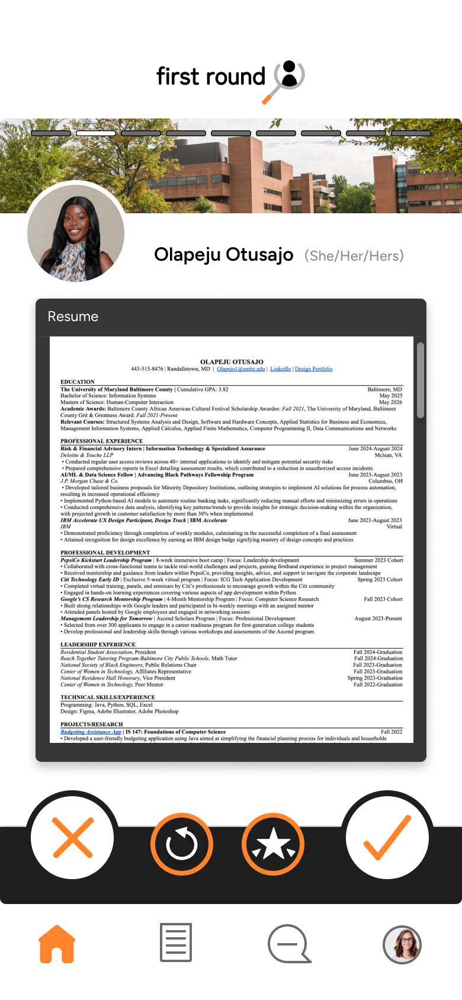
Digital Wire Frame & Prototype
Landing Page: Resume
Purpose
The resume page is a second-level page that users can access by tapping on the right-hand side of the screen. This page provides recruiters with more detailed insights when they want to learn more about a candidate.
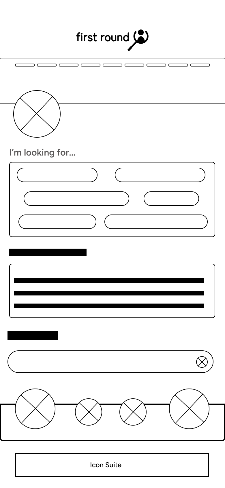
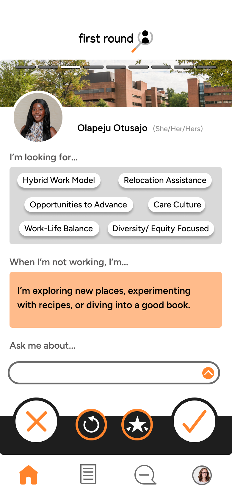
Digital Wire Frame & Prototype
Landing Page: Get To Know Me
Purpose
The 'Get to Know Me' page includes two customizable options that allow candidates to express themselves both within and beyond a work environment. Recruiters can conveniently interact with the page without needing to navigate away.
Revisiting the First Draft
What Changed and Why
After completing the first draft of the prototype, I reassessed usability gaps and interaction risks. The primary issue centered on profile navigation: replacing swipe gestures with buttons introduced too many clickable elements, increasing the likelihood of accidental taps. Through iteration, I refocused the design on swipe-first interactions and simplified both the interaction model and information architecture to improve usability, accessibility, and scalability.
Key Changes
- Swipe-first navigation: Prioritized swipe interactions over buttons to reduce user error and align with familiar mobile behaviors
- Reduced accidental taps: Moved button interactions to the end of scroll flows to minimize mis-clicks
- Simplified information architecture: Replaced nested screens with vertical scrolling to improve learnability and reduce cognitive load
- Accessibility-driven visual updates: Increased color contrast to meet WCAG guidelines and used brand colors as minimal accents
- Expanded product scope: Introduced concepts for messaging, meeting scheduling, and prioritization while keeping core pages intentional and focused
Second Draft Prototype
An evolved prototype focused on usability, clarity, and scalability
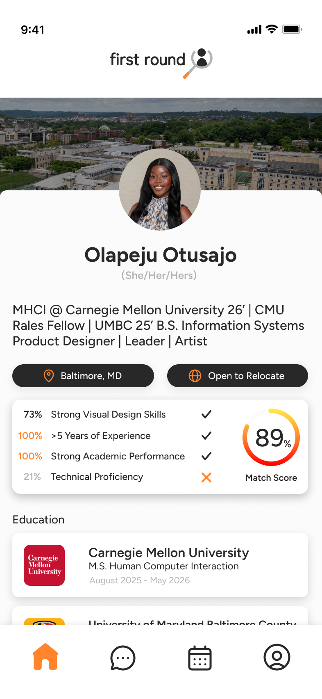
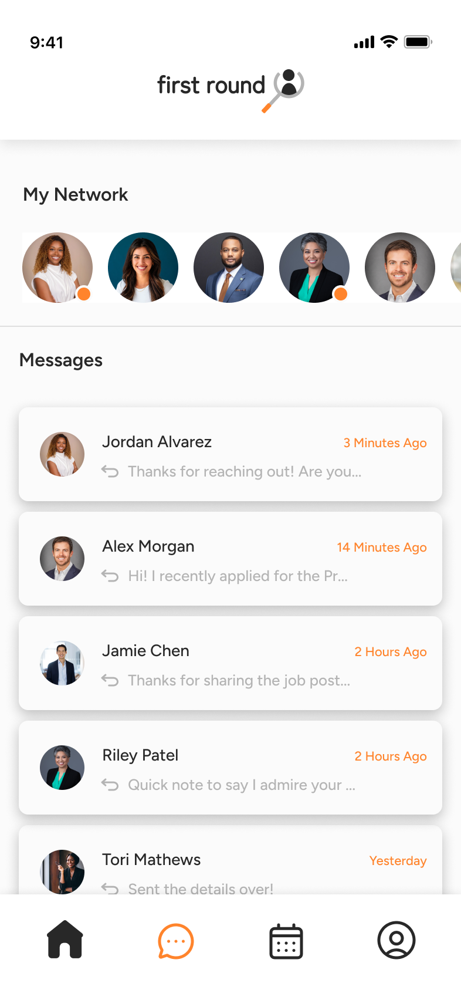
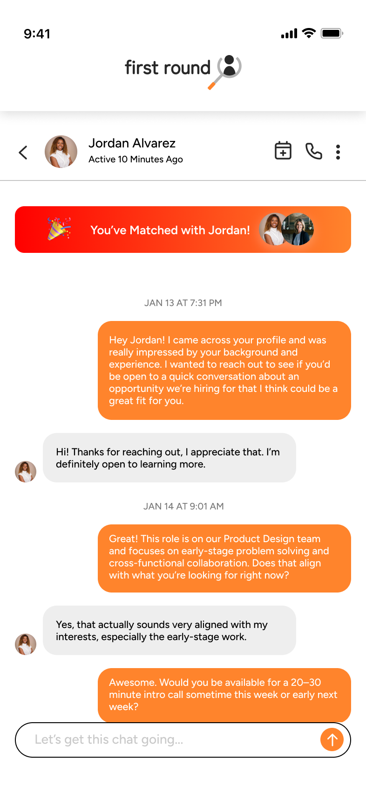
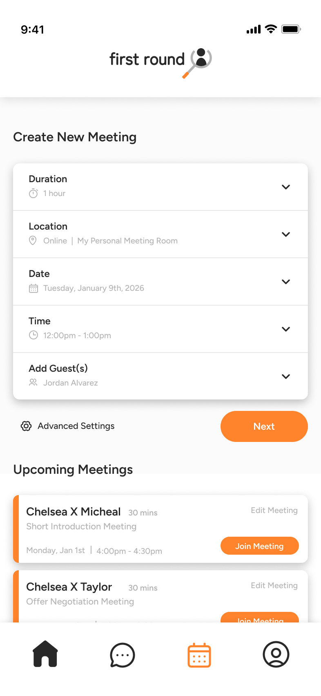
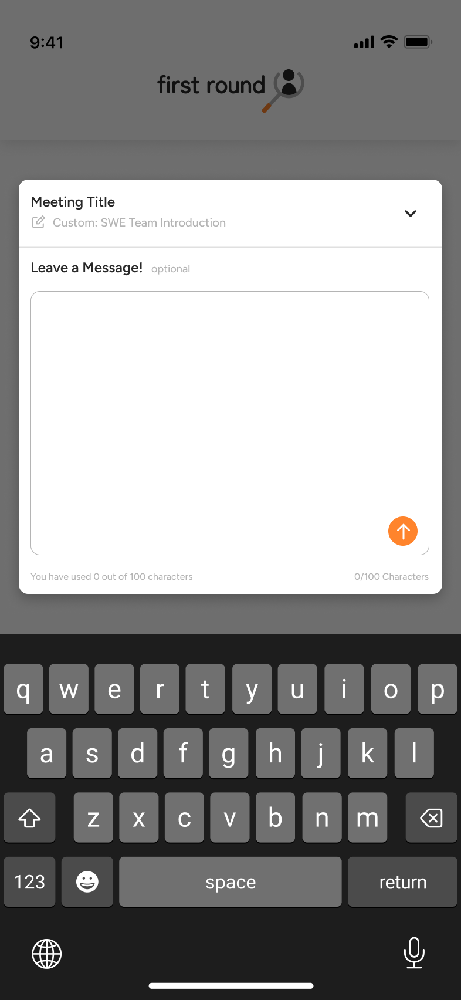
Final Prototype
11 Interactive Pages
Solution Overview
'First Round' makes hiring easier by using a swipe-based system to connect job seekers with employers. Candidates can highlight their skills and personality through personalized profiles, while employers can set filters to find the right match. In the refined design, navigation prioritizes swipe interactions to reduce accidental clicks, and vertical scrolling replaces nested screens to simplify information architecture. Key actions are placed prominently based on user intent, improving learnability and efficiency. The visual design emphasizes a minimalistic color scheme with high-contrast accents for accessibility, while layout and content are intentionally organized to enhance clarity, engagement, and the overall user journey.
Skills Used
Reflection
Through this case study, I was able to enhance my visual design skills by deeply assessing the graphic design side of product design, considering branding, color schemes, and the subliminal messages conveyed to users through first impressions and design decisions. This taught me that every design choice needs a clear rationale and careful consideration of its impact on user experience. Throughout the project, I applied these insights to my first draft, which had a solid information layout but offered many opportunities for growth in aesthetics. I realized that the visual balance of a mobile app greatly influences a user’s likelihood to engage with it. I carefully prioritized information based on user intent. For example, when a user is trying to set a meeting with an applicant, I ensured that date and time selection was immediately visible and prominent, enhancing the overall user journey. From base-level brand design to wireframes, the first draft prototype, and finally the refined prototype, my biggest takeaway was the importance of taking the time to iterate, frequently revisiting designs, and remaining open to change. By doing so, I was able to strengthen the experience and make the design more effective and user-centered.
More Projects
Check out my other work